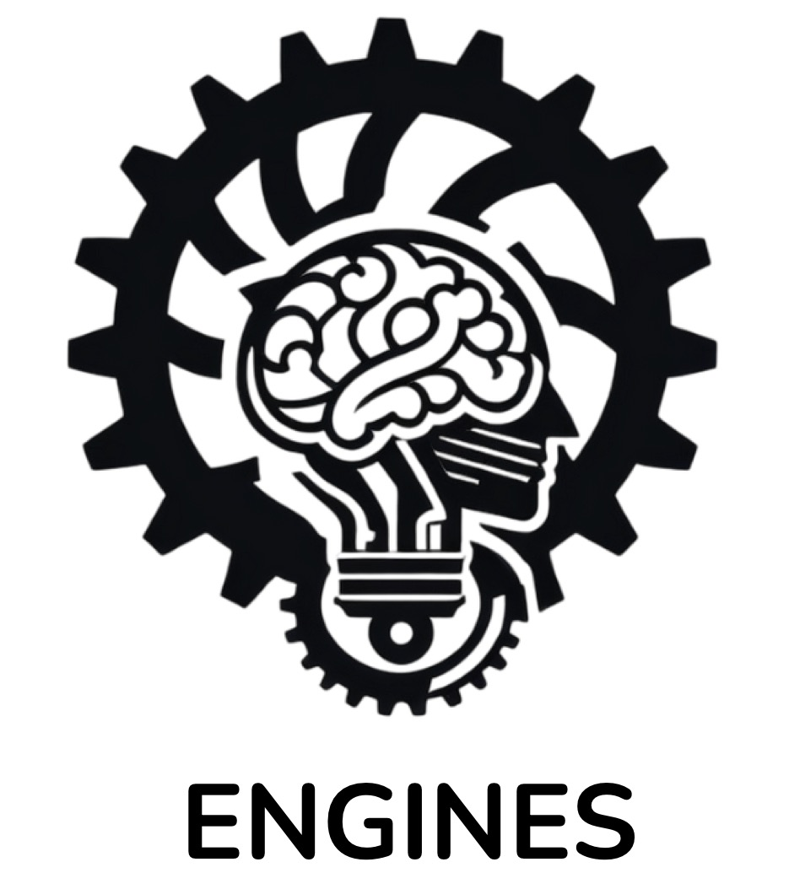

ENGINES

The ENGINES project considers the increasingly-relevant role played by artificial intelligence (AI) technologies in daily-life scenarios along with the overwhelming amount of AI techniques that engineers have at their disposal for Intelligent Systems Engineering (ISE). While engineers should have models and tools enabling to synergically exploit different AI techniques in an integrated way, this usually does not happen nowadays, as different AI techniques are mostly used either in isolation or with ad-hoc integrations tailored to a specific application—hence hindering both re-usability and conceptual integrity. Furthermore, whereas specific engineering methods and tools are available for specific techniques – such as for machine learning platforms or agent-oriented programming languages –, a comprehensive approach encompassing complementary AI techniques is currently missing. Agent-oriented models and technologies may help face this issue, as they offer abstractions, methods, and tools for ISE, by providing the common conceptual and technological grounding for their well-founded integration. The overarching goal of the project is to define the ENGINES conceptual and technical framework providing models, guidelines, and tools for the integration of intelligent agent techniques, and in particular intelligent agent models and technologies with some selected AI techniques:
- coordination and agreement technologies
- conversation and natural language processing
- spatial modelling and reasoning
- semantic knowledge representation chosen for their relevance in AI wrt currently-hot topics like explainability and understandability, as well as for the lack in terms of corresponding ready-to-use technologies.
Here, other mature AI techniques – such as machine learning – could be used as off-the-shelf components in specific modules. In particular, we take as a reference the BDI intelligent agent logic and architecture as the de-facto standard for the engineering of intelligent agents capable of rational reasoning in dynamic environments. This makes it possible the engineering of intelligent systems based on existing and effective agent technologies augmented with the aforementioned AI techniques in a coherent, well-founded, comprehensive framework—instead of current practice based on ad-hoc solutions.
The Operative Unit of Genova contributed to the ENGINES project in various ways:
- The 26th Workshop From Objects to Agents, WOA 2025, was co-organized by members of three units of the ENGINES project: Enrico Blanzieri (General and Program co-chair), Università degli Studi di Trento; Giovanni Ciatto (Program co-chair), Università degli Studi di Bologna; Viviana Mascardi (General co-chair), Università degli Studi di Genova.
- The preparation of the volume "The Agents Journey -- Twenty-Five Years of Multi-agent Systems", celebrating 25 years of the Workshop From Objects to Agents, WOA 2024, involved the coordinators of two units of the ENGINES project (Viviana Mascardi and Andrea Omicini, Università degli Studi di Bologna) in the role of editors, and collects many contributions by ENGINES' members. The volume is divided into four parts for a total of 14 chapters.
- Many papers on the ENGINE's topics have been published by the UniGE members, especially related with
conversation and natural language processing and, coherently with the ENGINES objectives, with the connections between Generative AI and BDI agents:
- 2026
- Andrea Omicini, Alessandro Ricci, and Viviana Mascardi. AI Infrastructure: From Gigastructure to Edge Intelligence with Multi-Agent Systems. 2026. [To Appear in] Mascardi V., and Omicini A. (eds) The Agents Journey -- Twenty-Five Years of Multi-agent Systems. Springer.
- Davide Ancona, Daniela Briola, Angelo Ferrando, Maurizio Martelli, and Viviana Mascardi. 25 Years of Declarative Agent Technologies in Italy. 2026. [To Appear in] Mascardi V., and Omicini A. (eds) The Agents Journey -- Twenty-Five Years of Multi-agent Systems. Springer.
- 2025
- Angelo Ferrando, Andrea Gatti, and Viviana Mascardi. 2026. MEDiTATe: a First Step of a Journey from BDI to Neuroscience, and Back. In Engineering Multi-Agent Systems: EMAS 2025. Springer-Verlag, Berlin, Heidelberg, 117–140. Online version
- Angelo Ferrando, Andrea Gatti, and Viviana Mascardi. 2026. Oops, I Heard That! Situated Communication with Locality-Aware KQML. In Engineering Multi-Agent Systems: EMAS 2025. Springer-Verlag, Berlin, Heidelberg, 157–176. Online version
- Andrea Gatti, Viviana Mascardi, Angelo Ferrando. 2025. Let Me Talk to You! Natural Language Interaction Between Humans and BDI Agents via ChatBDI. In Proceedings of ECAI 2025. IOS Press, 3646-3654. Online version
- Andrea Gatti, Viviana Mascardi, Angelo Ferrando. 2025. ChatBDI: Think BDI, Talk LLM. In Proceedings of AAMAS 2025. International Foundation for Autonomous Agents and Multiagent Systems/ACM, 2541-2543. Online version
- Angelo Ferrando, Andrea Gatti, and Viviana Mascardi. 2026. Integrating Virtual Reality, Chatbots, and BDI Agents: VEsNA Goes Fast! In Agents and Multi-Agent Systems Development. Springer, Cham. Online version
- Gianluca Aguzzi, Giovanni Ciatto, Angelo Ferrando, Andrea Gatti, and Viviana Mascardi. 2025. LLMs as Agents, LLMs at the Service of Agents, or Agents at the Service of LLMs? In Informal Proceedings of the Agent Toolkits Community Session at EUMAS 2025. Online version
- Angelo Ferrando, Daniela Briola, Rem W. Collier, and Viviana Mascardi. 2025. Agency and Generation: Friends or Enemies? [To Appear in] Proceedings of EUMAS 2025. Springer.
- Daniela Briola, Giuseppe Vizzari, Giuseppe Mirra, Andrea Gatti, Matteo Martini, and Viviana Mascardi. 2025. Integrating JaCa-Unity in VEsNA for Behavioural Realistic VR Simulations. [To Appear in] Proceedings of EUMAS 2025. Springer.
- 2026
- Many toolkits belonging to the VEsNA ecosystem have been developed or refined to meet the ENGINES' objectives.